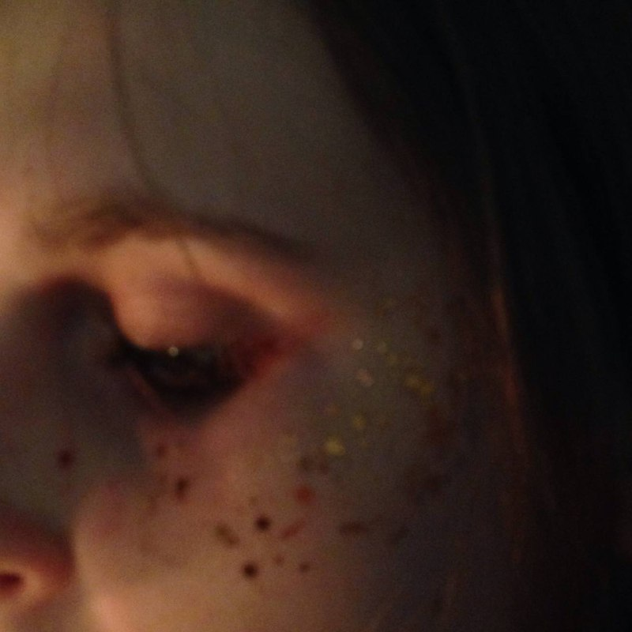

Привет! Меня зовут Екатерина.
В повседневной жизни я работаю
в аптеке, а в свободное время увлекаюсь

Еще в средней школе мне открылась возможность аналоговой фотографии.
Это было очень завораживающее - сначала фотографировать все, что вижу, потом сдавать на проявку и ждать результата, ожидание всегда было волнительным.
В 2019 году я нашла себе первый пленочный фотоаппарат, который раньше принадлежал родителям. Это был(я не могу вспомнить название). Я с головой окунулась в мир пленки, у меня появился первый опыт плёночной фотосъемки, первые снимки, а также единомышленники. Мы встречались, обсуждали наши кадры и весело проводили время. Многие из нас были новичками, но это не мешало нам находить общий язык и делиться опытом. Все это было безумно интересно и увлекательно.
Со временем я настолько увлеклась фотографией, что я решила не упускать возможность и продолжить развивать эту тему, продвигать в массы искусство плёнки в современном мире, а заодно и себя, как фотографа.